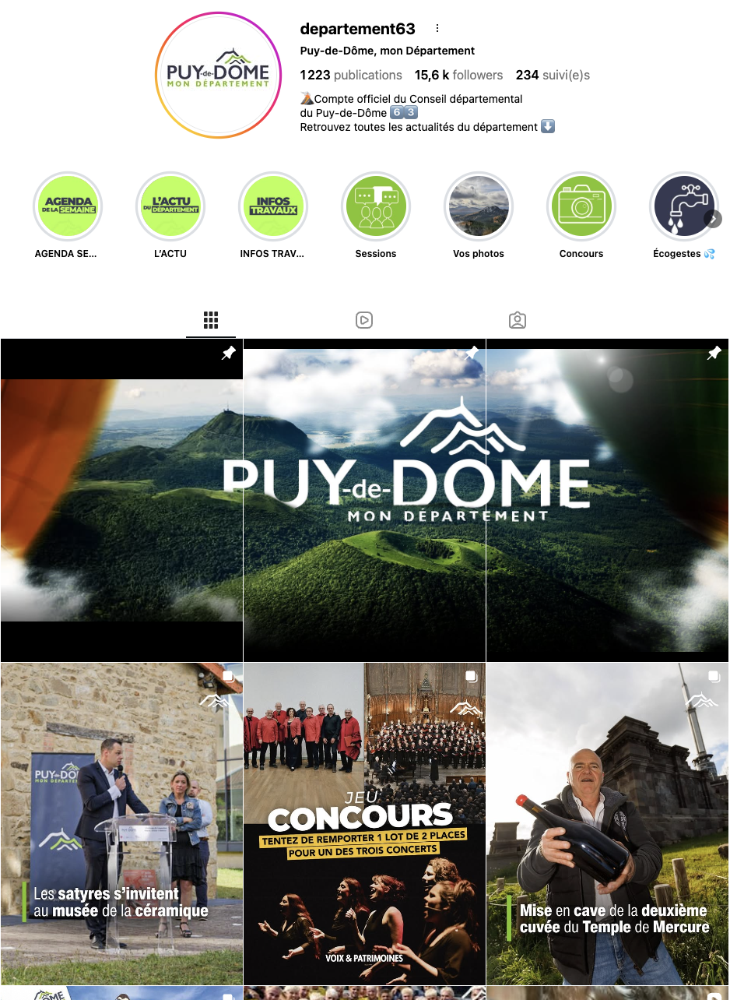

01 · Média
LSDJ
Production et gestion des réseaux sociaux d'un média engagé. Stratégie de contenu, tournage et montage vidéo court-format.
Production et gestion des réseaux sociaux d'un média engagé. Stratégie de contenu, tournage et montage vidéo court-format.
Plateforme civique permettant aux citoyens d'exprimer et partager leurs convictions. Design, identité visuelle et développement web.
mesconvictions.comCoach IA qui structure le mémoire de recherche — et met l'étudiant en lien avec son directeur aux moments clés. Sources peer-reviewed via OpenAlex (250M papers), méthodologie française stricte. Jamais à ta place.
mythese.comCoach méthodologique IA · Pas un rédacteur fantôme
Le coach IA qui structure ton
mémoire de recherche.
Plateforme qui finance le vélo urbain par les trajets quotidiens. Cyclistes récompensés, entreprises visibles, villes engagées dans la mobilité douce.
beeclou.frVos trajets méritent
du sens.
Contenus vidéo pour le club — production, montage, diffusion officielle.
Réseaux sociaux institutionnels — visuels, rédaction, animation de communauté.

Un projet à impact ? Une collaboration ? Écrivez-moi.